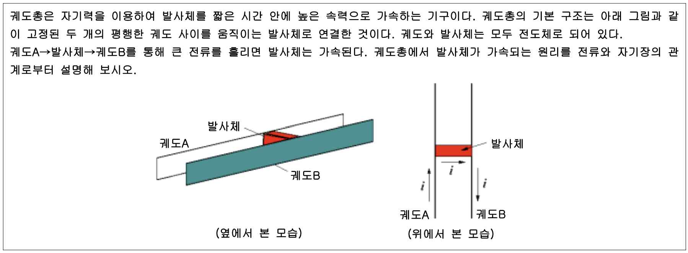

문제 3
궤도총은 자기력을 이용하여 발사체를 짧은 시간 안에 높은 속력으로 가속하는 기구이다. 궤도총의 기본 구조는 아래 그림과 같이 고정된 두 개의 평행한 궤도 사이를 움직이는 발사체로 연결한 것이다. 궤도와 발사체는 모두 전도체로 되어 있다. 궤도A\(\rightarrow\)발사체\(\rightarrow\)궤도B를 통해 큰 전류를 흘리면 발사체는 가속된다. 궤도총에서 발사체가 가속되는 원리를 전류와 자기장의 관계로부터 설명해 보시오.
